Projeto de Intervenção Pedagógica
O desenho da figura humana articulado com a Cidadania, ao longo do 2.º período, com a turma do 12.º ano de Desenho A.
Sobre o projeto
O PIP «Corpo Presente/Ausente» estruturou-se segundo a metodologia de trabalho de projeto, articulando as Aprendizagens Essenciais de Desenho A com as de Cidadania e Desenvolvimento. Ao longo de nove aulas, os alunos partiram de um exercício de consciência corporal e da análise de obras de arte contemporânea (com destaque para Lourdes Castro) para desenvolver, individualmente, o desenho de uma figura humana do seu quotidiano em escala aproximada do real, culminando numa instalação coletiva exposta no Mosteiro de Tibães e na biblioteca da escola.
Sequência didática
A visita de estudo a Lisboa (5 e 6 de fevereiro), com a instalação «Habitar a Contradição» de Carlos Bunga na Gulbenkian, serviu de mote ao PIP, numa lógica deweyana de integrar as experiências vividas na sala de aula.
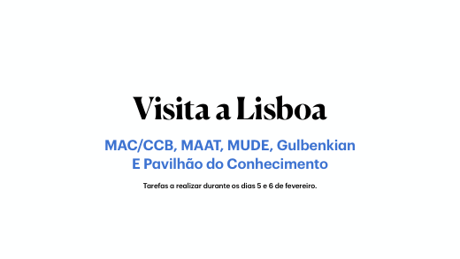
Exercício de consciência corporal (observar-se a si, aos pares e às mãos), análise dialogada de obras e Mentimeter de auscultação de saberes prévios. A aula encerrou com desenhos rápidos estruturais (Tarefa n.º 1).
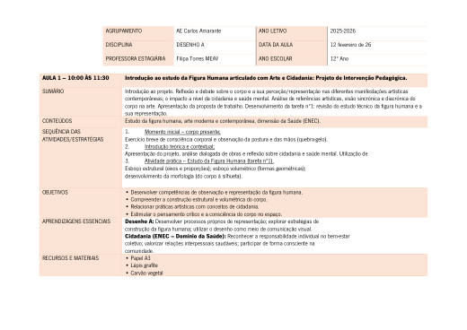
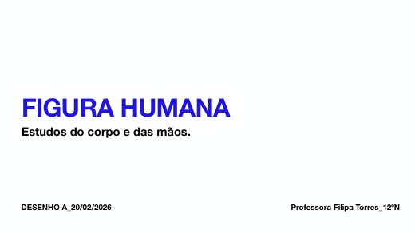
Concluiu-se a Tarefa n.º 1 e iniciou-se a Tarefa n.º 2: o estudo da morfologia a partir de uma imagem escolhida por cada aluno — uma pessoa do quotidiano que traduzisse a sua perceção da sociedade. O acompanhamento individualizado foi central.
Perante a progressão de alguns alunos para as mãos, fez-se uma breve apresentação teórica (com exemplos de Van Gogh, Henry Moore e Käthe Kollwitz) e o estudo das mãos da pessoa escolhida, já com carvão. Um dos ajustes ao plano inicial.
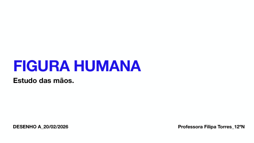
Trabalhou-se o conceito de instalação artística, partindo da questão «O que é uma instalação?» e da construção dialogada de uma definição. Incluiu um ensaio coletivo de montagem dos trabalhos na parede — um dos momentos mais participativos do projeto e o primeiro exercício de auto e heteroavaliação.
Após a decisão coletiva sobre a escala aproximada do real e a forma de exposição, prosseguiu-se o desenho expressivo final da figura e das mãos (Tarefa n.º 2). Foi projetada uma apresentação com informações da Sala do Recibo do Mosteiro de Tibães.
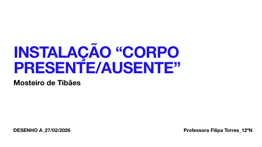
Desenvolveu-se o desenho final e arrancou a ampliação para a escala aproximada do real (desenhos A3 digitalizados, partilhados na Classroom e transferidos para papel de cenário por projeção). As peças, inspiradas em Lourdes Castro, conjugam a silhueta a carvão sintético e o desenho expressivo das mãos a carvão vegetal.
Ponto de situação e esclarecimento dos elementos da justificação escrita (processo, opções formais e técnicas, pesquisa, escolha da figura e postura, relação com a cidadania e a saúde mental). A turma dividiu-se em dois grupos devido à necessidade de superfícies planas.
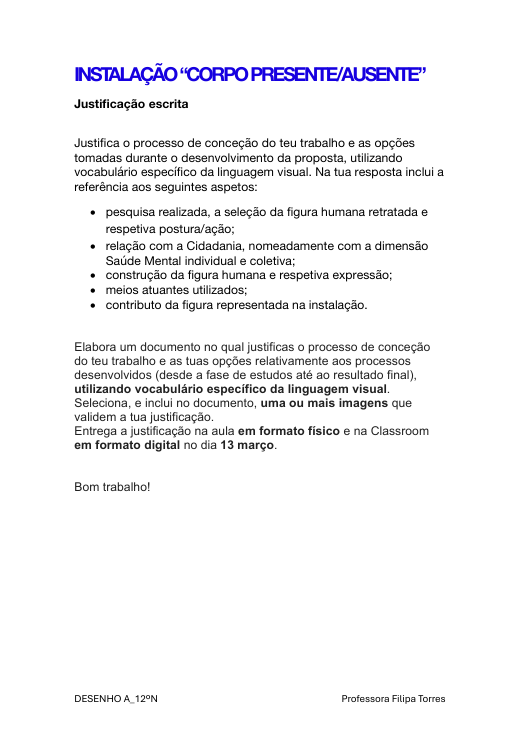
Concluiu-se a transferência dos desenhos à escala aproximada do real e a representação expressiva das mãos a carvão vegetal na oficina, com acompanhamento individualizado. Verificou-se em muitos alunos uma expressividade cada vez mais identitária.
Reflexão coletiva sobre a relação entre o trabalho individual e a peça coletiva, apresentação do protótipo da instalação e conclusão dos trabalhos. A fase final incluiu a montagem no Mosteiro de Tibães (19 de março), a inauguração aberta à comunidade (21 de março) e a reapresentação na biblioteca da ESCA.
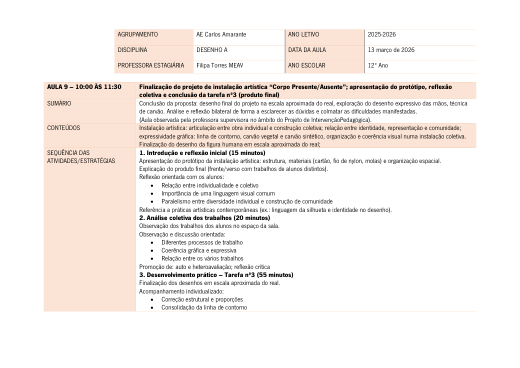
Avaliação · Inquérito final
No final do projeto, os 20 alunos responderam a um questionário com 39 questões sobre a importância do projeto, a metodologia, as aprendizagens, o trabalho coletivo e a articulação com a cidadania e a saúde mental. Apresentam-se de seguida alguns dos resultados.
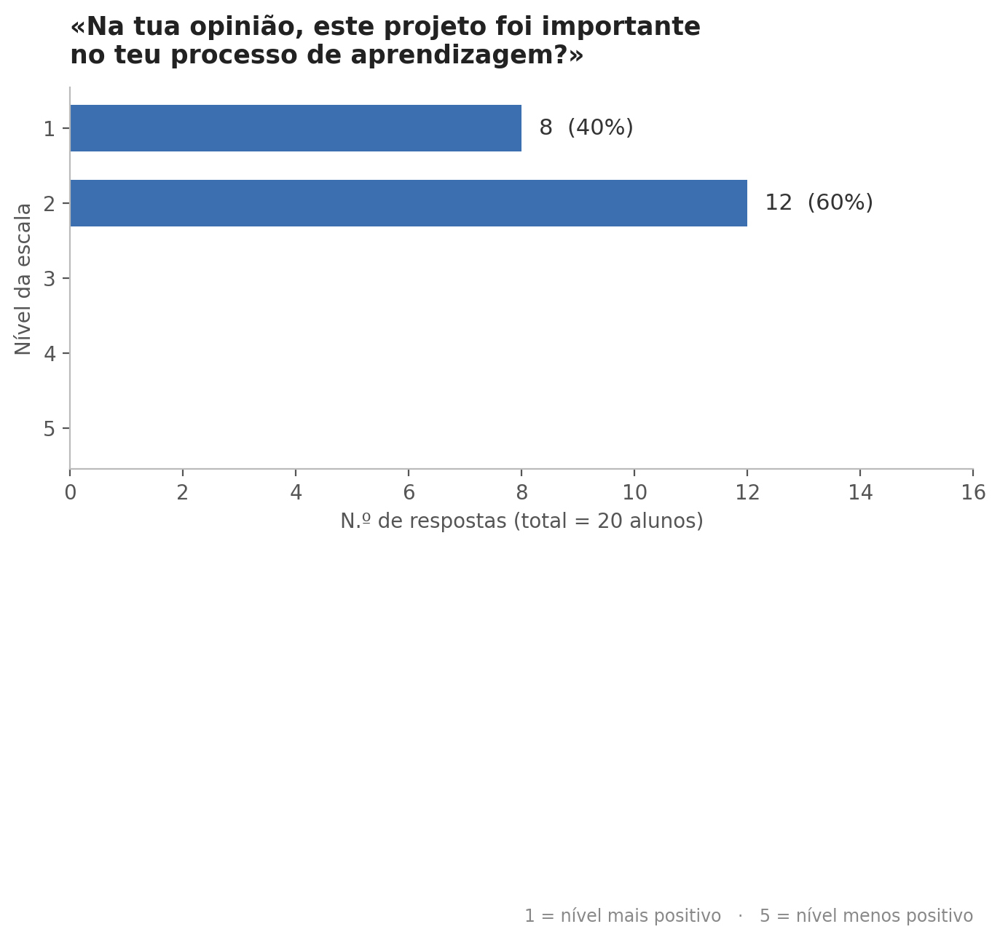
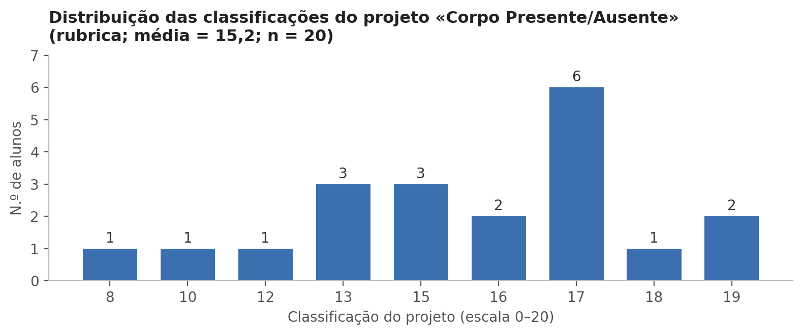
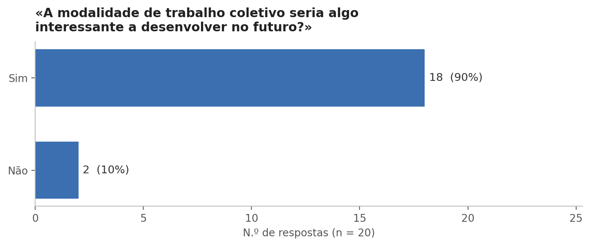
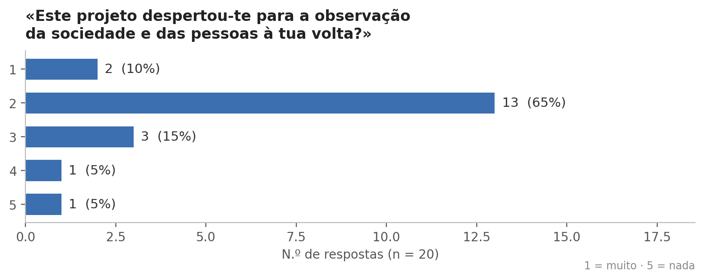
{kind=link}